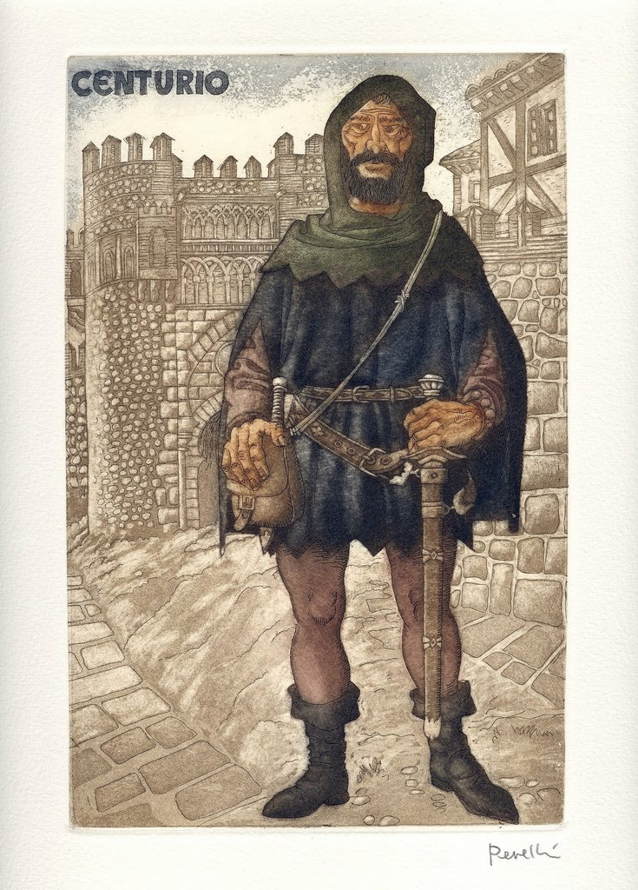

SOBRE
La Celestina, escrita por Fernando de Rojas y publicada en
1499, es una tragicomedia que marca el paso de la Edad Media al Renacimiento.
La historia comienza cuando Calisto, un joven noble, se enamora perdidamente de
Melibea al verla por
casualidad en su jardín. Desesperado porque ella lo rechaza, pide ayuda a Celestina, una vieja
astuta,
alcahueta y hechicera, conocida por sus artes de seducción y engaño.
Celestina utiliza un hechizo y su manipulación para acercar a los amantes. Con la ayuda de
Sempronio y
Pármeno, los criados de Calisto, logra que Melibea se enamore también. Sin embargo, la codicia y
la traición
provocan una cadena de muertes: primero Celestina, luego los criados, y finalmente los propios amantes,
Calisto
y Melibea, que mueren trágicamente.
La obra muestra cómo el deseo, la ambición y la corrupción moral pueden llevar a la destrucción,
y mezcla
humor, erotismo, magia y tragedia.
PERSONAGENS
Celestina es una vieja alcahueta, hechicera y dueña de un burdel. Astuta, manipuladora y
ambiciosa, utiliza sus conocimientos
de magia y su habilidad con las palabras para unir a Calisto y Melibea a cambio de dinero. Representa la
corrupción y la decadencia moral del mundo que la rodea.
Calisto es un joven noble y apasionado que se enamora perdidamente de Melibea tras verla en su jardín. Su amor es obsesivo y egoísta. Representa el amor idealizado que termina en tragedia por falta de razón.
Malibea una joven hermosa, inteligente y de buena familia. Al principio rechaza a Calisto, pero bajo la influencia de Celestina y movida por la pasión, termina enamorándose de él. Su amor termina en desgracia y su muerte simboliza la desesperación y el honor perdido.
Sempronio (criado de Calisto). Cínico y codicioso, se alía con Celestina para sacar provecho de la situación. Representa la deslealtad y la falta de valores.
Pármeno (otro criado de Calisto). Al principio desconfía de Celestina porque la conoce desde niño, pero acaba uniéndose a ella y a Sempronio en la traición. También muere víctima de la codicia..
Elicia y Areúsa son jóvenes prostitutas y discípulas de Celestina. Son personajes secundarios pero importantes: muestran una visión realista de la vida, la sensualidad y el resentimiento social.
Pleberio es padre de Melibea. Su lamento final refleja el dolor de la pérdida y la impotencia ante el destino.
Alisa es la madre de Melibea. Ama a su hija, pero confía demasiado en Celestina. Representa la ingenuidad de la nobleza.
Sosia y Tristan son criados fiel de Calisto, acompañan a su amo en sus citas con Melibea.

Centurio es amigo de Areúsa. Bravucón al que Elicia y Areúsa contratan para vengar la muerte de Celestina. Representa la violencia y el caos del final.